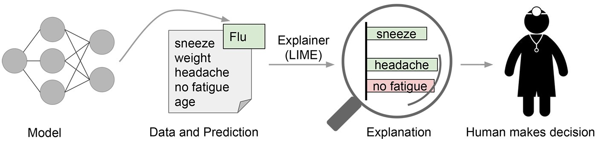

LIME
Last Modified: 16 Sep,'21
LIME is a local interpretability technique that uses a simpler surrogate model like linear regression or decision tree, to explain the original complex target model**. It is a model agnostic method, meaning it does not depend on the underlying nature of the target model, and that makes this technique very flexible to accommodate any kind of machine/deep learning architectures. The way LIME works is:
- The algorithm takes in the local instance which you want to get explanations for.
- New local dataset is formed of user specified size:
- Random features are sampled from the instance as set S.
- The selected features in set S are then perturbed. By default, for numeric features the feature values are tweaked whereas for textual data the features/tokens are masked from the instance.
- These steps are repeated until user specified size of the dataset is achieved.
- Instances in new formed dataset are weighted according to their distance with the original instance.
- This new dataset is passed through the original model to get its prediction labels.
- Using the new dataset and labels of original model, train the simpler surrogate model.
- Give out final explanations by interpreting the surrogate model.
1. LIME for Text
LIME by itself is very naive for textual data, but nevertheless gives out decent level explanations that can help us understand the intricacies of the target model. As discussed earlier, the algorithm randomly masks words from the original text and then trains a surrogate model on top of that. Later the weights of the surrogate model are retrieved as explanations for the given text.
Example:
The dataset used for this example is Quora Insincere Questions Classification. An insincere question is defined as a question intended to make a statement rather than one looking for helpful answers.
The above image depicts a generic output of LIME on textual data, wherein each orange bar denotes the tokens that contributed towards insincere class and their importance, and on the other hand each blue bar denotes the tokens that contributed towards other classes (in this case sincere class) and their importance.
2. Pros of using LIME on Text
- LIME is model agnostic making it flexible to include heavy-weight models like Bert, GPT, etc which are also state-of-the-art models in NLP.
- By default, LIME returns R2 Score as a fidelity metric, which indicates how well has the surrogate model approximated the target model.
- In my experience, LIME’s results were reflective of the model’s performance.
3. Cons of using LIME on Text
- LIME being a local explainability method cannot summarize results at a global level.
- It takes ample of time to get all the explanations form a large dataset using LIME. But after all it’s a downside which normally all local explainability techniques suffer with.
- Only using R2 Score to judge how well the explanations are returned from LIME is not sufficient.
- By default, the sampling used to mask tokens is Random Sampling. It in turn ignores one of the most important concepts of text based learning, the context present in the text.
- By default, the distance metric is set as cosine similarity, which uses tf-idf at its core. Weighing texts only in terms of frequency is not sufficient and will not give the correct picture.
- LIME suffers from instability i.e., its results can vary largely for minor perturbations.
- LIME uses masking of tokens to form the neighborhood of a text, which is not the most ideal way.
- The set of hyper-parameters is also local i.e., an optimal hyper-parametric set for one text may not be optimal for the other.
Updates: No updates as of now